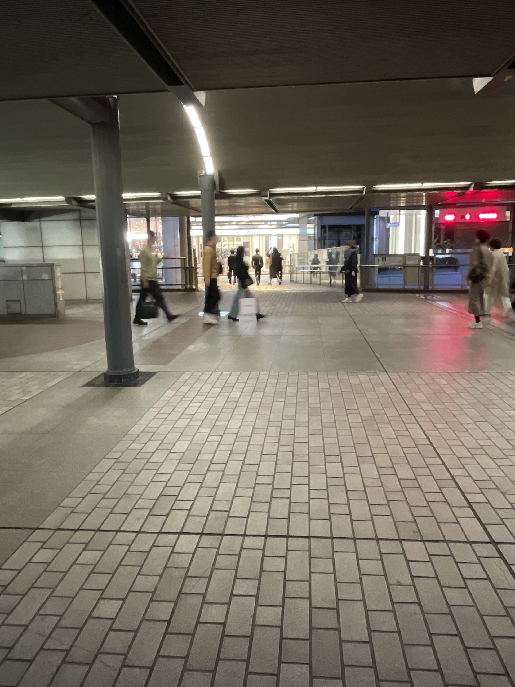
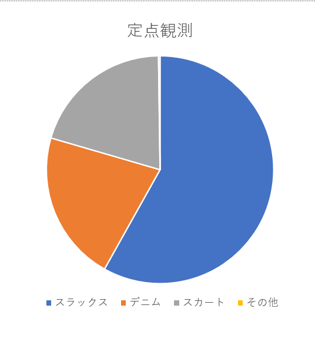
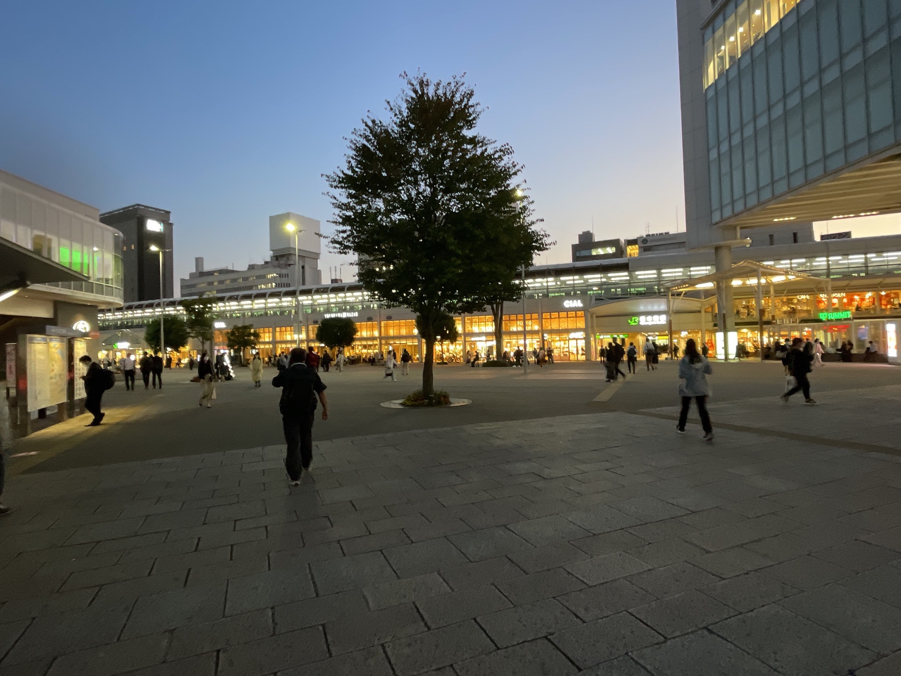
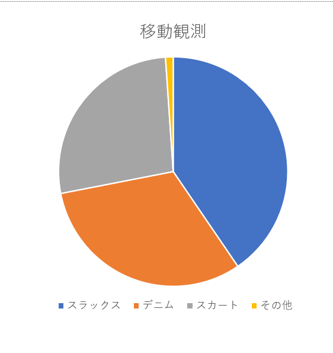

⇒観察の内容
ボトムスの種類について観察。大きく4つに分けた。
・スラックス
・デニム
・スカート（ワンピースも含む）
・その他（スキニーや判別が難しいもの）
ボトムスの種類について観察。大きく4つに分けた。
・スラックス
・デニム
・スカート（ワンピースも含む）
・その他（スキニーや判別が難しいもの）
- 定点観測 ・場所 桜木町駅近くの動く歩道
- 移動観測 ・場所 桜木町駅からJR根岸線までの範囲
- 感想
※撮影;miku 撮影日;10/20
・時間 約15分間
予想
スラックス、デニムが多そう。スカートはスラックスやデニムに比べたらそんなにいなさそう。
結果
・スラックス 約321人
・デニム 約118人
・スカート（ワンピースも含む） 約112人
・その他（スキニーや判別が難しいもの） 約176人

考察
予想通りくラックスは多かった。これは会社が近くにあったため、会社員の方が多く動く歩道を利用して いたためだと思う。予想に反してデニムが少なくスカートと同じくらいの人数が履いていた。
※撮影;miku 撮影日;10/20
・時間 約４分
予想
定点観測と同じくスラックス、デニムが多そう。近くにショッピングモールがいくつかあるからスカートの 方も多そう。
結果
・スラックス 約45人
・デニム 約35人
・スカート（ワンピースも含む） 約30人
・その他（スキニーや判別が難しいもの） 約35人

考察
定点観測の結果と比べ、スラックス、デニム、スカート、その他の観察結果に大きな差はなかった。 近くにショッピングモールがあったので買い物に来ている人が多かったためだと考えられる。 また、桜木町駅周辺に比べ、JR根岸線周辺は女性が多いイメージだった。
⇒移動観測は動画撮影をしたので詳しく調べてみた。
集計した（判別できた）人数は男性は約73人、女性は約84人だった。定点観測での全体の人数は数えられなかったが 男性が多い印象だった。移動観測では女性が多かったので私は女性のパンツとスカートの比率を調べてみた。
結果は、パンツ 約58人、スカート 約30人だった。
グラフにするとこんな感じ↓

パンツが多い結果になった。桜木町周辺は風がとても強いためパンツを履く方が多いと考えた。